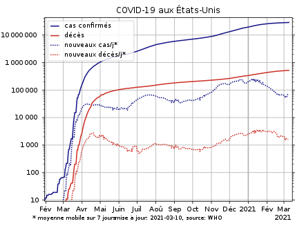

Pandémie de Covid-19 aux États-Unis
La pandémie de Covid-19 aux États-Unis, désigne les manifestations de la maladie infectieuse émergente induite par le SARS-CoV-2, responsable du COVID-19, aux États-Unis, où le premier cas confirmé a été annoncé en Janvier 2020.
De mai 2020 à août 2020, le pays est devenu l'épicentre de la pandémie, et selon l'OMS7 le pays où la pandémie de Covid-19 a le plus rapidement progressé.
La seconde semaine de juillet, le nombre de mort par jour dus au Covid-19 est reparti à la hausse dans le pays8, alors que Donald Trump tweetait encore le 9 juillet que la hausse des cas détectés était uniquement liée au nombre de tests effectués9, alors même que les experts s’accordaient pour dire que les contaminations augmentaient bien plus vite que les tests. Et fin juillet, le nombre de décès y dépassait (d'environ 11%) celui de toute l'Union européenne10 (pour une population de l'Union européenne supérieure à celles des États-Unis d'environ un tiers11).
Les moyennes nationales lissent d'importantes disparités géographiques et temporelles dues aux foyers d'infection, et en donnent une lisibilité limitée.
L’espérance de vie aux États-Unis chute d'un an au premier semestre 2020. Cette baisse est particulièrement marquée pour les minorités, les Afro-américains perdant 2,7 ans d’espérance de vie (passant de 74,7 à 72), les hispaniques 1,9 an (81,8 à 79,9), et les Blancs 0,8 an (à 78 ans)12.